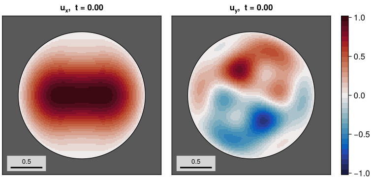
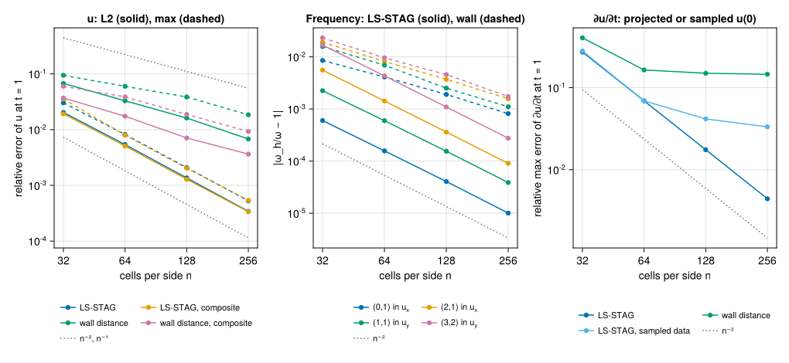
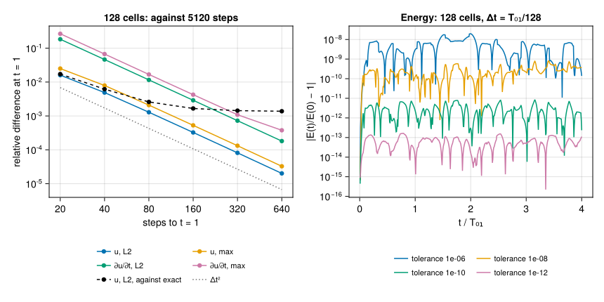

13 – Staggered wave equation on a disc
Both components of a staggered field ring as exact Bessel standing waves on a cut-cell disc, with the LS-STAG viscous operator as the Laplacian and implicit time steps far above the explicit limit. This example addresses the staggered Dirichlet problem in #15; the issue's centred scalar and staggered Neumann variants are not part of it.

At a glance
| Physics | The linear wave equation u_tt = c²Δu, c = 1, for both components of a staggered (MAC) field u on the disc r < R = 1, centred in the box [-1.25, 1.25]². Outside the disc the box is an embedded solid, and u = 0 on the circle (NoSlip()), so each component is a scalar Dirichlet problem. u_x starts as the (0,1) and (2,1) Bessel modes and u_y as the (1,1) and (3,2) modes, at rest; the solution is exact for all time. |
| Algorithms | Δ_h = −V⁻¹K from StaggeredDiffusionOperator(geometry; closure) with the default LSStagClosure(): a cut face's value sits at the midpoint of its open part, K is the symmetric positive semidefinite stiffness and V holds the open staggered volumes. The implicit midpoint rule (Crank–Nicolson, Newmark's average acceleration) for u_t = v, v_t = c²Δ_h u needs one shifted solve (V + (cΔt/2)²K)ū = V(uⁿ + Δt vⁿ/2) per step, by StaggeredEllipticSolver: conjugate gradients with the geometry-aware tree multigrid, the path of the Navier–Stokes viscous step. Uniform n × n mesh in 8×8 blocks, or a composite mesh whose blocks along the circle are refined once. |
| Worth varying | resolution=128 cells per side; composite=false; closure=LSStagClosure() or WallDistanceClosure(); steps=128 over final_time=nothing, one period of the (0,1) mode; the relative solver tolerance=1e-10; modes; initial_displacement!, project_initial_displacement! from disc_wave.jl or sample_initial_displacement! from disc_wave_analysis.jl. |
| Validated against | The exact solution at the value points, the frequency of each mode and the discrete energy. LS-STAG is second order in space in the L2 and maximum norms of u and ∂u/∂t (orders 1.98–1.99 from 128 to 256 cells; relative errors at 256 cells 3.42e-4/5.28e-4 for u), and so is every mode's frequency. The wall-distance results are reported below. Time integration is second order, and the energy changes by less than the solver tolerance with steps 31 times the explicit limit. |
| Cost | Default (:docs and :default alike): 128 cells, one period in 128 steps. The whole figure script, with the space, time and energy studies (32 runs, the largest 2000 steps on 84736 cells), took 1161 s on one thread. |
Gallery timings: Julia 1.12.7, one Julia thread and one BLAS thread, AMD Ryzen 9 5950X; package loading is excluded. The figure script ran while other jobs shared the machine.
Setup
In polar coordinates (r, θ) about the centre of the disc,
\[\begin{aligned} u_x &= J_0(j_{0,1}r)\cos\omega_{0,1}t + 0.6\,J_2(j_{2,1}r)\cos 2\theta\,\cos\omega_{2,1}t,\\ u_y &= J_1(j_{1,1}r)\sin\theta\,\cos\omega_{1,1}t + 0.8\,J_3(j_{3,2}r)\cos 3\theta\,\cos\omega_{3,2}t, \end{aligned} \qquad \omega_{m,k}=\frac{c\,j_{m,k}}{R},\]
where j_{m,k} is the k-th zero of J_m (bessel_zero: 2.405, 5.136, 3.832 and 9.761). Every mode vanishes on the circle. The run ends after one period of the fundamental mode, T₀₁ = 2πR/(c j_{0,1}) ≈ 2.613.
The diffusion operator of the viscous step supplies, per velocity component, the stiffness K and the mass V with Δ_h = −V⁻¹K. One step of the implicit midpoint rule,
\[\Bigl(V+\frac{c^2\Delta t^2}{4}K\Bigr)\bar u = V\Bigl(u^n+\frac{\Delta t}{2}v^n\Bigr),\qquad u^{n+1}=2\bar u-u^n,\qquad v^{n+1}=\frac{4}{\Delta t}\bigl(\bar u-u^n\bigr)-v^n,\]
is one solve! of StaggeredEllipticSolver(StaggeredEllipticOperator(operator; reaction=1, diffusion=(cΔt/2)²); preconditioner_options=(; geometry)). The update is the Cayley transform of an operator that is skew-adjoint in the energy inner product, so
\[E = \tfrac12\bigl(v^\top V v + c^2\,u^\top K u\bigr)\]
is conserved for every Δt; an inexact solve changes it by about the solver tolerance. A discrete mode of frequency ω_h turns by 2 arctan(ω_hΔt/2) per step, a relative phase lag of (ω_hΔt)²/12.
Explicit schemes are limited by the small cut cells. Leapfrog is stable for Δt ≤ 2/(c√λ_max), λ_max the largest eigenvalue of −Δ_h; explicit_limit(operator) in disc_wave_analysis.jl uses the largest absolute row sum of Δ_h (1/stable_timestep(operator; cfl=1)). That limit is 6.59e-4, against h/(c√2) = 0.0138 for the same mesh without cut cells; the default Δt = T₀₁/128 = 0.0204 is 31 times larger.
The initial displacement is not sampled from the modes: project_initial_displacement! solves the discrete Helmholtz problem (I − h²Δ_h)u₀ = (I − h²Δ)u(·,0) (one solve, h the base cell size). The corresponding continuous problem has the initial displacement as its exact solution; the discrete projection has a nonzero error. Sampled values excite the stiff modes of the small cut cells, which the energy-conserving scheme never damps (see Results).
Errors are measured where the closure places the values, from value_points(operator, axis): LS-STAG at the midpoint of the open part of a cut face, the wall-distance closure at the face centre, which can lie in the solid, where the Bessel functions continue smoothly. L2 is the root mean square weighted by the open staggered volumes that value_points returns for both components, max the largest error over the faces with a positive open volume; both are relative to the same norm of the exact solution at that time (at t = 1: ‖u‖ = 0.332/0.740, ‖∂u/∂t‖ = 0.970/2.36 in L2/max). A mode's frequency is the least-squares slope of its unwrapped phase atan(−b/ω, a), from the projections a, b of u and ∂u/∂t on its exact shape; (2/Δt) tan(ΩΔt/2) removes the implicit-midpoint lag and leaves the spatial frequency ω_h.
Run
From the repository root, in a Julia session started with --project=examples:
include("examples/13_disc_wave/disc_wave.jl")
run = run_example(resolution = 64)
maximum(abs, run.energy ./ run.energy[1] .- 1) # relative energy change
include("examples/13_disc_wave/disc_wave_analysis.jl")
errors = disc_wave_errors(run) # absolute errors and exact norms at run.time
relative_error(errors, :displacement_l2)run_example(; on_step = PhaseTracker()) records the phase of each mode for mode_frequencies. Run the default case headlessly, or regenerate the figures with all studies:
julia --project=examples examples/13_disc_wave/disc_wave.jl
julia --project=examples examples/13_disc_wave/make_figures.jlAppend --studio to the example command to follow the run in a browser; press Ctrl+C to close Studio after the run.
Results
The animation shows u_x and u_y of the default run over one period of the fundamental mode: the axisymmetric fundamental breathes under the (2,1) mode in u_x, and in u_y the (3,2) mode, with its nodal circle, goes through four periods under the (1,1) mode. Grey is the PLIC solid and the black line the exact circle. At t = T₀₁ the relative errors of u are 9.07e-3 (L2) and 1.37e-2 (max), mostly the phase lag of the large time step: the measured frequency errors of the four modes, −2.6e-4, −1.28e-3, −6.8e-4 and −4.40e-3, are the implicit-midpoint lags (ωΔt)²/12 = 2.0e-4, 9.2e-4, 5.1e-4 and 3.31e-3 plus, within 3e-5, the spatial errors measured below at 128 cells. The energy changes by at most 7.4e-12 of its initial value.

Space. t = 1 in 2000 steps (Δt = 5e-4), solver tolerance 1e-12. Relative errors of LS-STAG on the uniform mesh:
| n | u, L2 | order | u, max | order | ∂u/∂t, L2 | order | ∂u/∂t, max | order |
|---|---|---|---|---|---|---|---|---|
| 32 | 2.028e-2 | 3.026e-2 | 1.725e-1 | 2.719e-1 | ||||
| 64 | 5.387e-3 | 1.91 | 8.180e-3 | 1.89 | 4.388e-2 | 1.98 | 6.908e-2 | 1.98 |
| 128 | 1.360e-3 | 1.99 | 2.088e-3 | 1.97 | 1.109e-2 | 1.98 | 1.753e-2 | 1.98 |
| 256 | 3.424e-4 | 1.99 | 5.275e-4 | 1.99 | 2.803e-3 | 1.98 | 4.423e-3 | 1.99 |
The spatial frequency errors are second order too: from 128 to 256 cells −4.05e-5 → −1.01e-5 for (0,1), −3.60e-4 → −9.03e-5 for (2,1), −1.54e-4 → −3.87e-5 for (1,1) and −1.09e-3 → −2.74e-4 for (3,2). On the composite mesh (the blocks along the circle refined once, n the base resolution, 84736 cells at 256), the u maximum error at n = 32 is 3.553e-2, 17 % above the uniform result. At 256 cells the relative u errors are 3.37e-4/5.39e-4, with orders 1.91–1.95 from 128 to 256 cells.
The legacy WallDistanceClosure() gives relative u errors of 6.73e-2, 3.29e-2, 1.61e-2 and 6.79e-3 in L2 (orders 1.03, 1.03, 1.25) and 9.41e-2, 5.98e-2, 3.85e-2 and 1.85e-2 in the maximum norm (0.65, 0.64, 1.06) on the uniform meshes, 20 and 35 times the LS-STAG errors at 256 cells; on the composite mesh they are about half as large (3.64e-3/9.26e-3 at 256, orders 0.96/1.01) and need twice the conjugate-gradient iterations. Frequency error orders from 128 to 256 cells are 1.23, 1.23, 1.19 and 1.40; at 256 cells the errors are 6–81 times larger (−8.14e-4 for (0,1)). Its maximum error of ∂u/∂t stalls at about 0.15 (0.164, 0.150, 0.146 from 64 to 256 cells). Faces whose centre lies in the solid keep their unknowns and wall conductances of the wrong sign for the open part they represent (#110).
Initial data. With sampled initial data LS-STAG's u converges at second order as well (orders 1.98/1.97 from 128 to 256 cells; at 256 cells within 0.4 % of the errors from the projected start) and so does ∂u/∂t in L2, but its maximum error stalls: 0.280, 0.069, 0.042 and 0.033 from 32 to 256 cells (orders 2.02, 0.73, 0.32). Sampling puts truncation errors on stiff cut-cell modes, and the energy-conserving scheme keeps them oscillating at their own frequency. The Helmholtz projection reduces their excitation; its own absolute error at t = 0 is 9.8e-7 (L2) at 256 cells, far below the error at t = 1.

Time. On the 128-cell mesh the differences at t = 1 to a run with 5120 steps decrease at second order: in L2, relative to the exact norms, 1.60e-2, 4.90e-3, 1.29e-3, 3.25e-4, 8.13e-5 and 2.01e-5 for u with 20 to 640 steps (orders 1.71, 1.93, 1.98, 2.00, 2.02), orders 1.66–2.02 in the maximum norm, and 1.99–2.00 for ∂u/∂t in L2. The maximum ∂u/∂t difference loses order at the last halving (1.52, 3.8e-4). The error against the exact solution levels off at the spatial error of the mesh (1.36e-3 relative in L2).
Energy. Over four periods of the fundamental mode at Δt = T₀₁/128 (31 times the leapfrog limit), the largest relative energy change is 1.95e-8, 8.1e-10, 8.5e-12 and 1.6e-13 for the solver tolerances 1e-6, 1e-8, 1e-10 and 1e-12 (7.2, 8.6, 10.3 and 12.2 conjugate-gradient iterations per step for both components): it follows the tolerance down to round-off.
Variations
run_example(closure = WallDistanceClosure()) # legacy wall closure
run_example(composite = true) # refine the blocks along the wall once
run_example(steps = 32) # larger steps: stable, energy conserved, more phase lag
run_example(initial_displacement! = sample_initial_displacement!) # stiff cut-cell modes (disc_wave_analysis.jl)
run_example(modes = (DiscMode(1, 4, 1), DiscMode(2, 0, 2))) # other standing wavesFiles
- disc_modes.jl: the exact solution, Bessel zeros and modes, shared with the figure script and
test/integration/disc_wave.jl. - disc_wave.jl: mesh and geometry, the LS-STAG operator, the Helmholtz-projected initial data, the implicit-midpoint loop, energy, recording and Studio.
- discwaveanalysis.jl: errors against the exact solution, mode phases and frequencies, sampled initial data, the explicit limit.
- make_figures.jl: the animation and the space, time and energy studies.
assets/: generated GIF and PNGs.